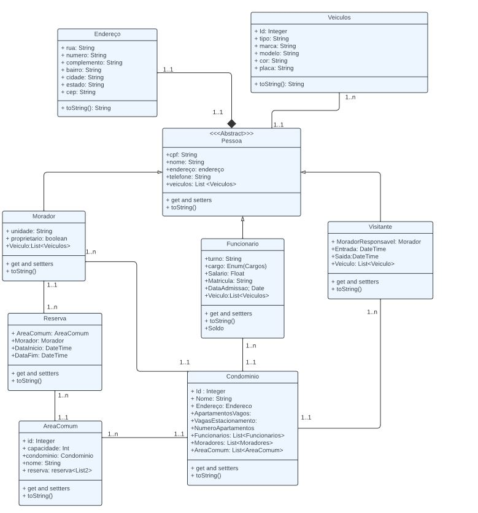

O objetivo desta aplicação é facilitar o controle das informações de um determinado condomínio, armazenando informações relevantes quanto aos moradores, visitantes, funcionários, reserva de áreas comuns, etc.
Este Projeto foi Desenvolvido pelo Al Jean Michael Estevez Alvarez, como Projeto Final (AT) da Disciplina Desenvolvimento de Serviços Web e Testes com Java
Ministrada pelo Professor Elberth.
>Controle Condomínio APP é uma aplicação desenvolvida para otimizar a gestão condominial, permitindo um controle eficiente de todas as áreas do condomínio.
Resumo geral da aplicação desenvolvida.
Na seção Uso da API temos as Rotas e os tipos para o funcionamento da API.
Um funcionario recebe adicional de 15% de seu salario a cada 5 anos de casa
Os Funcionarios que trabalham no turno noturno recebem um adicional de 30% de seu salario.
É possivel associar e dessociar um veiculo de um Visitante, Morador ou Funcionario